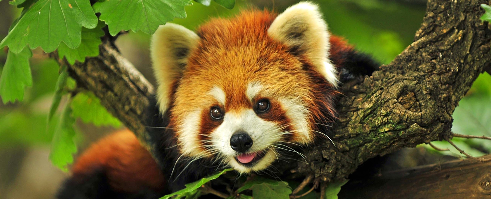
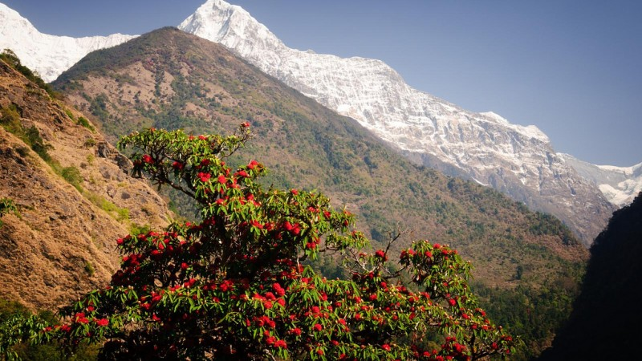

Nature
Nature of mustang
- Fauna found in mustang
- Flora found in mustang
Fauna found in mustang

,Mustang is rich in trans-biodiversity where five species of zooplankton, seven
nematode species, two mollusc species, one annelid species, 25 insect species (seven aquatic insects and 18
butterfly species), one spider species, 11 amphibian species, eight lizard species, five snake species, 105 bird
species and 29 mammal species have been recorded. Five butterfly species, extinct mollusk species (shaligram),
two frog species, one reptile species, two bird species (Tibetan sandgrouse and Eurasian eagle-owl), and seven
mammal species have only been recorded in Mustang in Nepal.[14] Out of the 18 butterfly species recorded in
Mustang, two are new and three are endemic to the area. Mustang is the habitat for snow leopard, musk deer,
Tibetan wild ass and Tibetan gazelle. The only native fish species, recorded at 3475m above sea level at Ghami
Khola stream in Dhami, has been identified as the highest elevation fish in Nepal. Six of the mammal species
recorded from Mustang area are protected by the National Parks and Wildlife Conservation Act (1973), while seven
of the mammal species are included in different threat categories of IUCN Red Data Book.[14]
Flora found in mustang

A flora of the Mustang valley in north-central Nepal. The Mustang region is of special interest for its
aridity and high degree of floral endemism. Overgrazing of pastureland beyond the capacity of the land to
regenerate and cutting of small trees and shrubs for firewood has contributed significantly to habitat change.
Similarly, with the rise in temperatures, the impact of climate change is clearly visible. These threats to such
an interesting flora have demanded more detailed studies of Mustang's plant resources and their adaptive
capabilities. The present publication is the latest outcome of the joint work of the Nepalese Department of
Plant Resources (DPR) and the University of Tokyo.
Tourism place in mustang
- Jomsom
- Kagbeni
- Muktinath Temple
- Lo Manthang
- Sky caves in Nepal
- Jomsom
- -Jomsom is the starting point of your journey to upper mustang Nepal. Travelers reach Jomsom by flight from
Pokhara or off road drive by jeep. Some Medias and blogger describe that it is one of the best place to see
in mustang. In fact Jomsom the worse place in whole upper mustang trip, you feel it after you visit.

- Kagbeni
- -Kagbeni village is a really nice place to spend few nights, explore green field, apple farming garden etc.
More than 500 years old monastery and village attract many tourists to visit Kagbeni. The junction of
Muktinath khola and kali Gandaki River is the holy place for Hindu pilgrims too.
- Muktinath Temple
- -Mktinath temple is a well known “Mukti Kshetra”. It is believe that after bathing in 100 holy tap and 2
ponds pilgrims became from known and unknown sins. In this way many Hindu and Buddhist pilgrims visit this
place.
Muktinath temple is situated in lower mustang beyond the regular upper mustang trek route. When you back
from upper mustang try to manage one extra day to visit Muktinath Temple.
- Lo Manthang
- -Lo Manthang is the major attraction and best place to see in mustang. Lo Manthang is the capital city of
hidden Tibetan Kingdom situated at Nepal. Lo Manthang trek follow the ancient caravan route from Jomsom to
Lo. The royal town of Lo Manthang surrounded by walls
- sky cave in nepal
- -From the Chhusang village travelers start to discover many sky caves on contiguous cliff along Kaligandaki.
On the way to Lo Manthang you will get an opportunity to see thousand of mane made caves.